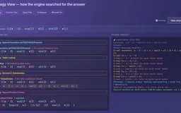
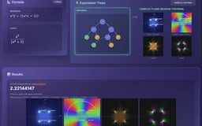
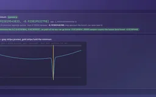

A symbolic integrator that searches for a formula and shows the steps.
Symbolic Unfolded
A hand-built Ruby computer-algebra system centered on finding symbolic solutions—for example, expressing an integral exactly instead of approximating it numerically. It searches substitutions, identities, rational decomposition and integration by parts, then differentiates and samples the result to check it. The same expression engine also supports differentiation, simplification, exact arithmetic, residue-theorem integration, vector calculus, and more.
The integration trace exposes candidate strategies, structural tests, chosen route and verification evidence in one view.
Quick start · live feature guide
Open the application, then follow what changes
A Ruby algebra workbench that searches for a symbolic route through an expression, then attaches evidence to the answer. Substitutions, identities and integration by parts sit alongside residues, exact arithmetic and vector calculus, with expression trees exposing the structure.
ƒ01
Read the structure
Parse an expression into a tree with explicit arithmetic domains.
∫02
Find a route
Try transformations, rational decomposition and integration strategies.
∂03
Check the answer
Differentiate candidate integrals and inspect symbolic or sampled verification.
∮04
Change the domain
Explore residues and other methods when elementary manipulations are insufficient.
Capabilities / connected systems
Read the system by what it makes possible
Related techniques belong to one family. Follow a family into the interface, recorded results and mathematical detail.
Structural strategy selection with visible methods and conditions.
Heuristic integration cascadeResidue routesResult checksSpecial functions and product familiesStrategy View
Feature set · 5 capabilities
Heuristic integration cascadeTables, substitution, rational forms, identities, special products and by-parts compete in a bounded order.
Residue routesSupported infinite rational and full-period trigonometric integrals become contour problems.
Result checksCompleted antiderivatives carry sampled derivative checks; divergence and unresolved cases have distinct outcomes.
Special functions and product familieserf, Si, Ci, Ei, li and Fresnel nodes, plus poly·exp·trig reductions, give checkable closed forms beyond the table.
Strategy ViewLive playback, a decision tree, a space plot and Mermaid source show which methods ran.
One Ruby engine for desktop and browser, with a guide to its code and tests.
Local Sinatra serverStatic ruby.wasm buildChecks from outside the derivation
Feature set · 3 capabilities
Local Sinatra serverA local Ruby process handles operation requests.
Static ruby.wasm buildThe docs build packages the same modules for a browser CRuby VM.
Checks from outside the derivationCentral differences, closed forms, round trips and value-preserving fuzzing test the engine’s output.
Interactive feature guide · 11 chapters
Use and inspect Symbolic Unfolded
A Ruby symbolic-math workbench, written without an external computer-algebra library, that searches through substitutions, identities, rational decomposition and integration by parts, then differentiates and samples the result to check it. Expression trees and named rule steps expose the work; residues, exact arithmetic and vector calculus extend the same engine beyond elementary examples. The eight recordings and the stills captioned “Earlier interface” come from the earlier Symbolic Math Suite; the other captures and the embedded workbench show the current interface, and the text describes the current engine and notes where the two differ.
Description · what it doesExplanation · how it worksTheory · equations & assumptions
Scan the descriptions and figures, or open a layer for the implementation and mathematical detail.
01
Capability family
Using the workbench
Where to type, which operation to pick and how to read a result.
01 · Interface
Using the workbench
Description · at a glance
Type a formula in the input bar and press Enter: the engine parses it and shows the readable form, its LaTeX and the expression tree. Operations open from a floating button in the lower right. Ten act on the formula in the bar: Integrate, Definite, Residue Theorem, Derivative, Differential, Taylor, Padé, Laurent, Simplify and Evaluate, with a field for the variable. Six open dialogs with their own inputs: Grad · Div · Curl · Laplacian, Interval bounds, Exact ℚ and ℚ(α), Discovery, Relativity, and a launcher for seven field-theorem and moving-domain tools.
Results appear as readable text, a pastable ASCII string with a copy button, and LaTeX. Solution Steps lists each rule as a from–to pair with a symbol for its category, and Strategy View can replay an integration. A selector above the input bar chooses when to simplify: at the end, never, or along the way. The Advanced Integration and Euler-form switches are still in the page but hidden, so Integrate always uses the cascade. The examples panel holds fifteen collapsible groups, from basics and substitution to special functions, quaternion-valued coefficients handled componentwise, and a group of integrals the engine does not solve: x^x, sqrt(sin(x)), exp(x^2) and 1/(x^4+1).
The stills below are the earlier interface’s four-step guide. Its sidebar had six operations: Derivative, Integrate, Simplify, Evaluate, Gradient and Differential. The input bar, tree panel, result forms and step list carried over to the current interface.
The earlier four-step guide
1 · Input bar
Image Earlier interface: the input bar with x^2*cos(x) typed. Pressing Enter parses the formula into an expression tree.
2 · Tree view and operations
Image Earlier interface: 1/(1 + sin(x)) after parsing, showing the readable and LaTeX formula, the input tree, and the operations sidebar with a variable field and Derivative, Integrate, Simplify, Evaluate, Gradient and Differential buttons.
3 · Result display
Image Earlier interface: the integral of 1/(1 + sin(x)) as tan(x) − sec(x) + C, with a result tree beside the input tree, readable text, a pastable string with a copy button, and LaTeX.
4 · Solution steps
Image Earlier interface: solution steps for the derivative of x^2·cos(x) (power rule, d/dx(x) = 1, chain rule for cos and product rule), each as a from–to card. This build left the exponent as x^(2−1); the current power rule folds it.
ExplanationWhat stands behind each kind of resultThe technical reference distinguishes five kinds of evidence.＋
The project’s technical reference names the evidence behind an answer: an interval bound under stated assumptions, a sampled check, an exact construction or a search result. Exact ℚ and ℚ(α) sits outside this list: it returns an exact value within its supported domain or refuses.
Class
Meaning
Examples
Conditional interval bound
An outward-rounded bracket; transcendental guarantees assume the platform library error is covered by the two-ULP widening.
Interval bounds
Verified
Checked against a reference outside the computation: a closed form, a finite difference, a conservation law or a known vector field.
Padé, Discovery, Relativity presets, the trigonometric residue route
Self-consistent
Computed two ways from the same parsed tree and shown to agree; evidence of a coherent implementation, not of a correct model.
Field-theorem and moving-domain tools
Exact, unchecked
Applies symbolic rules directly; no result check is run.
Derivative, Differential, Grad · Div · Curl · Laplacian
Heuristic
A search or rewrite with no normal form and no completeness claim.
Simplify, Laurent, the integration search (whose answers carry a sampled check)
Source evidenceEvery mode, and what stands behind itlive_projs/Symbolic/docs/technical.html
02
Capability family
Expression infrastructure
Parse once, transform a structured object, inspect what changed.
02 · Structure
Representation makes a method available
Description · at a glance
An input formula becomes a binary expression tree whose nodes retain the operation, its children and the variables it depends on. The same object can be differentiated, normalized, evaluated or sent through an integration strategy. The tree viewer displays the representation used by the computation itself.
Normalization and sparse polynomial conversion make useful structure visible. Equivalent input spellings can expose the same product, power or rational form. Simplification remains a bounded rewrite system: it is useful algebraic engineering, but it is not a universal canonical form or a general zero test.
Trees, readable text, a pastable string and LaTeX are printers over one tree, so a display fault and a mathematical fault are different problems: an older build printed a − (b + c) as a − b + c while the tree underneath was correct.
Video Earlier interface: the tree panel switches between the node diagram and the text view for sin(x)·e^cos(x), x·arctan(x) and their integrals. The text view marks each branch [L] or [R]. This build printed the x·arctan(x) result line without the parentheses its tree contains.
What a node holds
ExpressionNode is a binary tree node with a left child, a right child and a link to its parent.
Leaves hold a number or a variable name. The parser stores every number as a floating-point value and substitutes pi and e as numbers.
Internal nodes hold an operator (+, −, ×, ÷, ^) or a function name such as sin, ln or erf.
A one-argument function keeps its argument in the right child and leaves the left child empty.
An integral the engine could not solve is itself a node named integral, so an unfinished result travels through the same structure as a finished one.
Two views of the same tree
The Expression Trees panel switches between a graphical diagram and a text view of the original and processed trees. The text view comes from the engine’s own tree printer, with a legend and the formula and LaTeX underneath.
Debugging: nesting and operand order can be read line by line.
Copying: the printout can be pasted into notes or code comments.
Compactness: a deeply nested expression stays readable where the node diagram becomes too wide.
ExplanationFrom syntax to a reusable expressionThe parser, facade and capability modules have separate responsibilities.＋
The parser establishes precedence and associativity before building ExpressionNode objects. MathematicalExpression owns the root and includes the capability modules that act on it. Operations share this representation rather than each implementing an independent parser. The web/VM layer serializes the resulting tree, formula, steps and method information for the interface.
The ordinary Polynomial type uses floating-point coefficients. The separate ExactPolynomial type exists because converting a Rational to float at construction would lose the very information needed for an exact GCD or zero test. Choosing the arithmetic representation changes what can be computed exactly, as well as how values are displayed.
Source evidenceParser and operator bindinglive_projs/Symbolic/symbolic/parser.rbExpression node representationlive_projs/Symbolic/symbolic/expression_node.rbStructural normalizationlive_projs/Symbolic/symbolic/normalizer.rbOrdinary polynomial arithmeticlive_projs/Symbolic/symbolic/polynomial.rb
ExplanationWhy analytical, and why build it from scratchThe earlier showcase’s rationale, restated against the project’s later history.＋
Numerical methods dominate practical computation, but an analytical result offers things sampling does not: an exact derivative has no discretization error, a closed form shows structure, and an expression can be simplified before it is evaluated many times. Where a fully analytical treatment is out of reach, a pipeline that is symbolic where possible and numerical where necessary is the direction this project is meant to explore, with semi-analytical rendering and simulation as longer-term interests.
Systems such as SymPy, Mathematica and Maple are powerful, but their internals are hard to inspect from outside. Building the engine directly shows where the difficulty lies. The earlier showcase said that parsing is straightforward and integration is hard. The second part held; the first did not. A later audit found that the original parser inverted associativity (5 − 2 + 1 evaluated to 2 and 2^3^2 to 64), crashed on a leading minus and silently dropped the variable in 2x. All three are fixed and covered by regression tests.
Source evidenceCorrectness audit and parser bug gallerylive_projs/Symbolic/docs/history3.htmlAssociativity regression caseslive_projs/Symbolic/symbolic/test_associativity.rb
Recorded examples · 2Expression structure and transformationThe interface keeps syntax, transformed structure and readable output visible as one piece of evidence.＋
Image A deeply nested logarithmic expression stays legible as the original and transformed trees are compared side by side. Image A representative antiderivative shows readable notation, original structure, transformed result and final expression together.
03 · Rules
Differentiation composes rules through the tree
Description · at a glance
Differentiation selects a rule from each node’s operator. Sums and differences split, products and quotients use the product and quotient rules, and every function the parser accepts has a chain-rule case: trigonometric and reciprocal trigonometric, hyperbolic and inverse hyperbolic, logarithm and exponential, inverse trigonometric, square root, absolute value, and the special functions erf, Si, Ci, Ei, li and the two Fresnel integrals. Each case builds a new subtree from copies of its children and records a named step, which the Solution Steps panel lists.
Powers take one of three branches in order: the power rule for x^n, a generalized power rule for f(x)^n, and logarithmic differentiation for a true f(x)^g(x). Recursion follows nesting as deep as the input goes; in practice the limit is the size of the result, which simplification then has to reduce. The earlier showcase said every derivative can be solved regardless of complexity. The accurate statement is narrower: the rules cover the supported function set, and the details below list where evaluation and display still lag behind.
Video Earlier interface: ln(ln(ln(ln(cos(x))))) typed by hand and differentiated. The input tree, the result tree, readable and LaTeX output, then solution steps that apply the chain rule once for each nested function.
Image Earlier interface: the derivative of ln(ln(sinh(cos(x) + x)))^arctan(x). The input tree is small; the result tree and the readable result, in logarithmic-differentiation form, are much larger. Video Earlier interface: derivatives of tanh(x), 1/cos(x)^2, tan(x)^4, sin(x)·e^cos(x) and x^2·e^x·sin(x), loaded from the example chips. The results are correct, and several are left unsimplified, such as 4·tan(x)^4·(1/cos(x)^2)/tan(x). The last chip sat in that build’s box of integrals it could not yet solve; differentiating it was unaffected.
Theory / mathematicsRules compose through the treeDerivative structure supplies both a tool and an internal check.＋
Differentiation applies recursive operator and function rules to the parsed tree. Products and compositions expand structurally, after which simplification can reduce the result. The derivative may be mathematically exact within supported symbolic rules while the implementation still has ordinary correctness risks; the word symbolic does not itself prove that a parser or rule implementation is bug-free.
This derivative infrastructure is reused by substitution tests, series coefficients, field operators and the antiderivative check. The reuse is powerful, but it also explains why agreement between two operations sharing the same parser and derivative code is not fully independent evidence.
Applied when the base is the variable and the exponent is a constant. The current rule folds the new exponent, so x^2 gives 2·x^1 rather than an unevaluated x^(2−1).
u and v are the two subtrees of a product node. Both derivatives are computed recursively and joined under a new sum node.
u is the numerator subtree and v the denominator subtree.
The chain rule connects an outer function f to an inner expression g. The tree supplies the composition explicitly, so the rule can recurse over g.
Theory / mathematicsWhen both base and exponent varyLogarithmic differentiation handles f(x)^g(x); constant exponents now take a shorter route.＋
Neither the power rule nor the exponential rule applies to f(x)^g(x). Taking logarithms gives ln y = g·ln f; differentiating both sides gives y′/y = g′·ln f + g·f′/f, and multiplying by y gives the rule below. The implementation builds exactly this tree: a copy of f^g multiplied by the sum of g′·ln f and g·f′/f.
The original engine sent every power through this route, so (x+1)^2 produced a large expression containing ln(x+1). A generalized power rule, n·f^(n−1)·f′, now handles constant exponents, and logarithmic differentiation is reserved for exponents that depend on the variable. For x^x the unsimplified result is x^x × ((1 × ln(x) + x × 1 ÷ x)), which the default final simplification reduces to x^x × ln(x) + x^x.
f and g are the base and exponent subtrees, both depending on x. The derivation assumes f > 0 so that ln f is real.
Source evidencePower branches and logarithmic differentiationlive_projs/Symbolic/symbolic/derivative_operations.rbGeneralized power rule fixlive_projs/Symbolic/docs/history3.html
ExplanationWhat “every supported function” coversParser, derivatives and the float/plain-text paths cover the reciprocal and inverse hyperbolic functions.＋
Each function name the parser accepts has a derivative case, and an operator with no case returns 0. An earlier build had no case for abs, so d/dx |x| silently became 0; because every ln|u| antiderivative contains an absolute value, that also disabled the antiderivative check for a whole family of correct integrals until it was fixed.
The float evaluator handles sech, csch, coth and both spellings of the inverse hyperbolic functions. Readable and pastable output retains their arguments, so a derivative such as −sech(x) tanh(x) can be copied back into the input and evaluated. Real-domain violations return no finite real value; poles remain non-finite rather than silently becoming zero.
Derivative results carry no automatic verdict badge. Focused regression probes compare derivatives with independent finite differences and verify that displayed expressions survive copying back into the parser. These checks support the implementation; they do not prove every symbolic rewrite. The large derivative in the still above agrees with central differences at x = 3.0, 4.2 and 7.1 to within 1e-9 relative.
Source evidenceAccepted function nameslive_projs/Symbolic/symbolic/parser.rbFloat evaluator caseslive_projs/Symbolic/symbolic/expression_node.rbReadable and LaTeX printerslive_projs/Symbolic/symbolic/tree_visualizer.rbCentral-difference harnesslive_projs/Symbolic/symbolic/headless_test.rbHyperbolic values, domains and display round tripslive_projs/Symbolic/symbolic/probe_hyperbolic.rb
04 · Rewriting
Simplification is a bounded rewrite loop
Description · at a glance
Rules that are individually correct produce bulky trees. Differentiating x·x·x without simplification gives ((1 × x + x × 1)) × x + x × x × 1, which simplifies to 3 × x^2; the raw second derivative of x^4 is 0 × x^3 + 4 × 3 × x^2, which becomes 12 × x^2. The simplifier repeats rewrite passes until nothing changes, for at most 30 passes, and records each rewrite as a named step.
There are two kinds of pass. The standard pass removes identities, absorbs zeros, folds constants and cancels a term that is added and subtracted. The experimental pass runs the standard rules and then expands binomial powers, distributes products over sums, collects like terms, divides out simple common factors and applies the trigonometric identity pre-pass and the normalizer. The Simplify button and the polishing of operation results use the experimental pass. A selector chooses whether results are simplified at the end, not at all, or along the way during integration.
What counts as simpler depends on the next step: (x+1)^2 is shorter, while x^2 + 2x + 1 suits polynomial routines. The engine has no cost measure that settles this. The experimental pass expands, and a pass can lengthen an expression, for example by rewriting cos(x)^2 in half-angle form. Simplification is therefore not a canonical form or a general zero test.
Video Earlier interface: two cases from the simplification examples. (x+1)^2 − (x−1)^2 reduces to 4·x and ((x+1)^2 − 1)/x to x + 2; the steps list binomial expansion, constant folding, a cancellation rule and polynomial division by x.
Rule
Input
Standard pass
Experimental pass
Identity elimination
x + 0, x × 1, x^1
x
x
Zero absorption
x × 0, x^0, 0 − x
0, 1, −1 × x
0, 1, −1 × x
Constant folding
2 + 3, 4 × 5, 2^3
5, 20, 8
5, 20, 8
Add, then subtract
(x + 2) − 2
x
x
Divide a power
x^3 ÷ x
unchanged
x^2
Cancel a factor
(3 × x) ÷ x
unchanged
3
Like terms
x + x, x × x
unchanged
2 × x, x^2
Square of a sum
(x + 1)^2
unchanged
x^2 + 2 × x + 1
Cube of a difference
(x − 2)^3
unchanged
x^3 − 6 × x^2 + 12 × x − 8
Distribution
3 × (x + 2)
unchanged
3 × x + 6
Difference that is zero
(x + 1)^2 − (x^2 + 2x + 1)
unchanged
0
Pythagorean identity
sin(x)^2 + cos(x)^2
unchanged
1
ExplanationThe loop, its guards and its checksA pass reports whether it changed the tree; the loop stops at a fixed point or after 30 passes.＋
simplify runs the standard or experimental pass while the previous pass reported a change, up to 30 iterations. It stops early if a pass claims a change but the printed expression is unchanged, and records each changed iteration for the steps panel.
Several rewrites once changed the value of an expression: a constant fold turned 0 − 1 into −2, which made d/dx(1/x) come out as −2·x^−2, and a normalizer step dropped the constant in c/(k·x^n). A general like-term collector added later evaluates the old and new subtrees at sample points and abandons the rewrite if they disagree. A fuzz probe simplifies 5,585 random expressions from a fixed seed and requires the value at three points to stay the same; it also found a polynomial division that never terminated on 12.25/(y − 2), since fixed.
Source evidenceFixed-point loop, passes and value checklive_projs/Symbolic/symbolic/simplification.rbValue-preservation fuzzinglive_projs/Symbolic/symbolic/probe_simplify_fuzz.rbConstant-folding regression caseslive_projs/Symbolic/symbolic/probe_simplify_zero.rb
Theory / mathematicsExpansion identities in the experimental passEach identity is applied by building the expanded tree from copies of its operands.＋
When a power node has a sum or difference as its base and 2 or 3 as its exponent, the rule clones the two operands, builds the expanded terms as new nodes, replaces the power and records a step such as Expand: (u+v)^2 = u^2 + 2*u*v + v^2. Distribution handles a factor on either side of a sum.
u and v are the two operand subtrees of the base.
The upper signs give the sum case and the lower signs the difference case.
Distribution applies with the factor a on either side of the sum or difference.
Source evidenceExpansion and distribution ruleslive_projs/Symbolic/symbolic/simplification.rb
03
Capability family
Integration and contours
Structural strategy selection with visible methods and conditions.
05 · Strategy
Integration is an ordered search through structure
Description · at a glance
The integrator tries methods under structural predicates. Raw-form substitution and special-function recognition can run before normalization; tables and substitution are followed by product identities, rational decomposition, reductions and integration by parts. An unresolved result retains an explicit integral marker.
The historical ExperimentalRisch module name does not mean the implementation is a complete Risch decision procedure. Its contribution is a practical, bounded cascade with inspectable choices. A completed candidate is differentiated and sampled against the input, and the resulting verdict travels to the interface.
The building blocks are ordinary modules: a nine-entry lookup table, ranked substitution candidates, closed-form families for x^n·e^(ax)·sin(bx) or cos(bx), mixed odd trigonometric powers and x^n·sin² or cos², an ordered trigonometric-identity pre-pass, rational integration by long division, completing the square and partial fractions, and radical and trigonometric substitutions. erf, Si, Ci, Ei, li and the Fresnel integrals are tree nodes like sin, so ∫sin(x)/x returns Si(x), which can be differentiated and checked like any other result. The interface always runs this cascade: the switch that could select the older standard integrator is still in the page but hidden. That standard integrator remains the cascade’s last fallback.
A Strategy View switch in the operations menu makes Integrate replay its run: a Live Solve timeline beside the engine console, a decision tree of the attempted techniques, a list of those techniques with their outcomes, a complexity-by-depth plot and Mermaid source for the tree. With the switch off, a solved integral shows its sampled check beside the readable result, in a badge such as “✓ Verified at 15/15 points (100.0% sample agreement; not a proof)”. A result that still contains an integral marker is marked “FAILED — no antiderivative found” and carries no verdict.
Image Earlier interface: 1/sqrt(x^2 + 2x + 5) and its antiderivative as input and result trees. The current engine also reports the selected method and completed-result verification.
Worked examples
The table reruns the earlier showcase’s integration examples and its list of practical results on the current browser build. Results are copied as the readable output prints them; the last column is the sampled check the engine attached.
Integrand
Family
Current readable result
Sampled check
2·x^2 + 3·x + 1
Polynomial
0.6667 × x^3 + 1.5 × x^2 + x (LaTeX shows 2/3 and 3/2)
Both recordings predate the correctness audit described in the project history and the verification badge. The methods shown are still in the cascade; the individual results are the output of that older build.
Video Earlier interface: cosh(x), e^x, 1/sin(x)^2, 1/(x^2+1), x·ln(x) and sin(x)·cos(x) integrated from the example chips. Solution steps name the matched rule, such as the arctan pattern for 1/(x^2+1), and the console shows the engine log. The results are correct.
Video Earlier interface: x/(x^2+1), sin(x)^4, x·ln(x), (2x+3)/(x^2−4), tanh(x), x·arctan(x), sin(x)·e^cos(x), x^3·sin(x) and 1/sqrt(x^2+2x+5). Steps and console output name substitution, power reduction, partial fractions, integration by parts and completing the square. This build printed the x·arctan(x) and x^3·sin(x) results without the parentheses their trees contain, so those two lines read with wrong signs; the printer has since been fixed.
ExplanationOrdering is part of the algorithmA useful rewrite can also destroy the syntactic clue another method needs.＋
Division-form substitution is tried early for expressions such as ln(x)/x, before rewriting division into a product and a negative power. General substitution, table lookup and rational structure likewise have deliberate positions in the cascade. Some phases return a candidate; others rewrite the working expression and continue or recurse.
Depth and call-count guards bound the recursive search. Finalization also prevents a partially solved tree from losing an integral marker through later simplification and being displayed as a complete antiderivative. These are explicit termination and result-shape safeguards, not completeness guarantees. The strategy trace shows which methods actually ran for the current expression.
The technical reference lists the phases in the following order. The raw-form, table, substitution and product-family phases return only a result they completed; normalization and the identity rewrite change the working expression and continue; distribution and product-to-sum restart the cascade; from inverse trigonometric functions onward, the first phase whose shape test matches returns, falling back to the standard integrator inside that phase if its method fails.
Division substitution on the raw form, for example ln(x)/x
Special-function forms on the raw form: erf, Si, Ci, Ei, li, Fresnel
Normalization and algebraic simplification (rewrite)
Table lookup
General substitution for products
Special product families
Trigonometric identity rewrite
Distribution of a product over a sum, then re-integration
Product-to-sum rewriting of trigonometric products
Inverse trigonometric functions and powers of ln
Rational functions: long division, completing the square, partial fractions
Trigonometric power reduction
Quadratic radicals and trigonometric substitution
Smart substitution
Integration by parts, choosing u in LIATE order
Standard integrator as the fallback: sum, difference and constant-multiple rules, the power rule ∫x^n dx = x^(n+1)/(n+1) with ∫1/x dx = ln|x|, and direct trigonometric, exponential and logarithmic forms
Source evidenceOrdered cascade, budgets and finalizationlive_projs/Symbolic/symbolic/experimental_risch.rbStrategy trace reportinglive_projs/Symbolic/symbolic/strategy_reporter.rb
ExplanationA deterministic sequence of transformationsThe earlier showcase compared the cascade to chess engines and ray tracers; the comparison needs two corrections.＋
The earlier showcase described integration as term rewriting: a chess engine explores moves, a ray tracer samples light paths, and this integrator explores algebraic transformations, each applying local rewrites and judging whether the result is better. As an analogy for exploring a space of transformations, that still describes the intent.
The analogy has limits. The cascade runs its phases in a fixed order and does not backtrack: the same input takes the same path every time. The early phases (raw-form substitution, special functions, the table, general substitution, product families) pass to the next phase when they find nothing; distribution and product-to-sum rewrite the integrand and restart the cascade; but once a later phase such as rational functions, trigonometric powers or by parts recognizes the shape, its result is returned, and if its method fails it hands the integrand to the standard integrator rather than to the next phase. Recursive calls share the depth and call budgets, and no alternative path is retried. The only sampling in indefinite integration is the antiderivative check, which draws its 15 points from a fixed seed. The rewrite-rule code in the earlier showcase was labelled conceptual; the source implements rules as explicit branches on node shape, and the looping rewrite system is the simplifier.
Source evidenceIs it Risch? Deterministic cascadelive_projs/Symbolic/docs/history3.htmlFixed-seed sample pointslive_projs/Symbolic/symbolic/verification.rb
Theory / mathematicsDifferentiate the substitution candidateStructure proposes a method; a proportional derivative tests it.＋
For substitution, a candidate inner expression u(x) is differentiated and compared with the remaining factors. A match allows the integral to be rewritten in u, solved through the supported machinery and substituted back. Rational functions instead use polynomial division and factor/decomposition machinery. By-parts introduces recursive subproblems and therefore shares the search budget.
The final antiderivative check compares its derivative with the integrand at sampled nonsingular points. This can reject many implementation errors but is not an identity proof or a calibrated probability of correctness. Branches, singularities and shared-code failures can evade a finite sample. An unresolved integral does not receive the verdict of a completed antiderivative.
The substitution requires the derivative factor u′. H is an antiderivative of h in the substituted variable; C is the integration constant.
Source evidenceSubstitution candidates and checkslive_projs/Symbolic/symbolic/general_u_substitution.rbSampled antiderivative verificationlive_projs/Symbolic/symbolic/verification.rb
Theory / mathematicsThe lookup table, product families and special functionsNine table entries, three closed-form families and seven special-function nodes.＋
The table is an ordered data list; each entry pairs a pattern type with an optional condition and a builder for the result. Substitution candidates (inner functions, power bases, sums and denominators) are ranked deepest first, and a candidate is accepted when the remaining factor is a constant multiple of its derivative and no x remains after rewriting.
Three families have their own closed forms: x^n·e^(ax)·sin(bx) and cos(bx) through a reduction in n, sin^m·cos^n with one odd power through a Pythagorean substitution, and x^n·sin² or cos² through the half-angle identity. Non-elementary integrals such as ∫e^(−x²), ∫sin(x)/x, ∫e^x/x, ∫1/ln(x) and ∫sin(x²) return erf, Si, Ei, li and Fresnel forms. Those functions are evaluated by composite Simpson quadrature of their defining integrals, except erf, which uses Ruby’s Math.erf.
I_n^sin is ∫x^n e^(ax) sin(bx) dx and I_n^cos the matching cosine integral. E_s is an antiderivative of e^(ax) sin(bx); the cosine recursion is analogous, and the pair recurses down to n = 0.
Entry
Form
Result
1
c/(x² + a²)
(c/a)·arctan(x/a)
2
c/(ax + b)
(c/a)·ln|ax + b|
3
c/√(a² − x²)
c·arcsin(x/a)
4
c/(x² − a²)
(c/2a)·ln|(x − a)/(x + a)|
5–6
tan·sec, cot·csc
sec, −csc
7
sec²·tan
½·sec²
8–9
sec², csc² (also written 1/cos², 1/sin²)
tan, −cot
Source evidenceOrdered table entrieslive_projs/Symbolic/symbolic/integral_table.rbCandidate rankinglive_projs/Symbolic/symbolic/general_u_substitution.rbClosed-form product familieslive_projs/Symbolic/symbolic/special_products.rbSpecial-function antiderivativeslive_projs/Symbolic/symbolic/special_functions.rbDivision, completing the square and partial fractionslive_projs/Symbolic/symbolic/rational_integration.rb
ExplanationFinding an antiderivative and deciding whether one existsThe rules resemble recognizable hand methods; random samples check candidates rather than prove them.＋
Risch gives a decision framework for elementary antiderivatives under its algebraic assumptions. Within a supported setting, the algorithm can find an elementary antiderivative or establish that none exists. Implementing that contract across expression classes and branch conventions is a different task from assembling a useful collection of successful integration rules.
This engine deliberately exposes a bounded sequence of substitutions, decompositions, identities and reductions. Its randomized antiderivative check differentiates a candidate and compares values at sampled points. That check can detect errors; it does not turn the rule search into a complete decision procedure or an identity proof.
The earlier showcase called the integrator Risch-like. The project’s own audit dropped that description: Hermite reduction, Rothstein–Trager and a Liouville decision framework are absent, the ExperimentalRisch name is historical, and an unevaluated marker means the patterns ran out rather than that no elementary antiderivative exists. The exact lane now provides the rational GCDs, resultants and algebraic extensions that Rothstein–Trager would need, but that method is not implemented; 1/(x^4+1) remains unsolved because it needs factoring with irrational coefficients.
Wheel over the scene may zoom; move outside it to scroll the page.
Move inside to run
The complete browser workbench is retained while paused. Move outside to suspend it; Reset alone returns the engine to its initial state.
Suspended · activate to run; playback pauses after the full panel leaves the vertical viewport.

Recorded examples · 1Strategy selection and verificationA result is paired with the route that produced it and the checks that support it.＋
Image The integration trace exposes candidate strategies, structural tests, chosen route and verification evidence in one view.
06 · Residues and conditions
A contour changes the available solution
Description · at a glance
The residue tool supports two concrete routes: sufficiently decaying rational integrands over an infinite real interval, and suitable full-period trigonometric integrands mapped to the unit circle. It reports the contour, poles, multiplicities, residues and the resulting sum.
Definite integration also distinguishes ordinary convergence from a principal value. Canceling divergent halves does not make an improper integral convergent. Numeric singularity checks and method badges make that distinction visible, while the supported contour family remains explicit.
Definite integration runs a ladder: the residue route where it applies, the fundamental theorem with an antiderivative, known special forms, then Simpson quadrature, and a badge reports which rung produced the value. Bounds are read by the engine’s parser, so 2*pi and pi/2 become numbers instead of being truncated, and a draggable range bar sets them, including infinite endpoints. A residue run also draws four complex-plane plots: |f(z)| as domain colouring, arg f(z) with the contour and circles around enclosed poles, and the real and imaginary parts.
Documented cases
Figures from the project’s technical reference; they were not rerun for this brochure.
Improper rational route: 16 closed forms reproduced and 4 inapplicable cases declined, after fixes for poles on the real axis, repeated poles and denominators of degree 6 and higher.
Full-period trigonometric route: 23 probe cases, each compared with periodic trapezoid quadrature; a disagreement above 1e-6 relative withdraws the contour result. 1/(1 + cos θ), with a pole on the unit circle, is declined, and exp(cos θ), which is not rational in sin and cos, is refused.
Convergence guard: the integral of 1/x² from −1 to 1 was once returned as −2 and is now reported as divergent; for 1/x the principal value appears only as a labelled extra; the integral of 1/√|x| from −1 to 1, which converges to 4, is accepted.
Theory / mathematicsFrom roots to an oriented contour sumThe theorem is exact; the current root and residue calculations can be numerical.＋
For the rational route, the engine extracts numerator and denominator polynomials, finds denominator roots, checks the real axis and selects poles in the chosen half-plane. The large semicircle must have a vanishing contribution for the reduction to the real integral to apply. Root finding and repeated-pole residue evaluation introduce numerical conditioning considerations.
For full-period trigonometric input, z=e^(ix) closes the path on the unit circle and converts the differential to dz/(iz). That route has a periodic quadrature comparison. The improper rational route has different checks and does not inherit that same numerical oracle. Fourier/keyhole contour families and arbitrary branch cuts are not supplied by these two implementations.
Γ is a positively oriented closed contour avoiding poles on its path. Its enclosed isolated poles zk contribute residues; converting a real integral additionally requires accounting for the rest of Γ.
Over a full period, this substitution traverses the unit circle. The transformed integrand and all poles introduced by the substitution must be handled.
Source evidenceImplemented contour routes and numerical pole handlinglive_projs/Symbolic/symbolic/residue_theorem.rb
ExplanationA singularity needs a one-sided interpretationAn improper integral and its symmetric principal value are different observables.＋
The definite-integral guard searches for problematic interior behavior and examines shrinking one-sided contributions. A convergent integrable singularity can have shrinking slivers; a logarithmic or power divergence need not. The guard prevents the simple F(b)−F(a) route from blindly crossing a pole.
This remains a numerical guard with a declared domain, not a general decision procedure for convergence. In particular, endpoint behavior and unusual functions require care. The interface should retain a divergence or principal-value label rather than flatten every outcome into one apparently ordinary number.
Source evidenceDefinite routes and convergence checkslive_projs/Symbolic/symbolic/definite_integral.rbTargeted improper-integral regression caseslive_projs/Symbolic/symbolic/probe_improper.rb

Recorded examples · 1Residue and contour geometryThe same structural interface extends beyond ordinary real-valued expressions.＋
Image The residue workflow combines the contour plane, poles, phase, real and imaginary fields with the resulting theorem trace.
04
Capability family
Series and field calculus
Compare local representations and expose intermediate derivatives.
07 · Analysis tools
Local expansions and moving domains
Description · at a glance
Taylor, Laurent and Padé provide different local representations of a function. Taylor exposes derivatives near a center; Laurent includes a principal part near a singularity; Padé uses a rational denominator that can represent pole-like behavior. Their plots and diagnostics expose the difference rather than presenting them as interchangeable approximations.
The field tools assemble partial derivatives into gradient, divergence, curl and Laplacian with explicit dimensional signatures. Separate line, surface and moving-domain dialogs expose tangents, normals and boundary/bulk terms. The numeric theorem comparisons test consistency under the chosen quadrature and sampling.
The field tools grew out of the earlier gradient operation, which took a list of variables and returned partial derivatives. The current dialog chooses a dimension up to six and names the axes, then computes the gradient or Laplacian of a scalar, or the divergence or curl of a vector field typed component by component. Curl is offered only in two dimensions, as a scalar, and three, as a vector. Axis names such as pi, e or a function name, and repeated axis names, are refused.
Two smaller operations sit beside them. Differential returns df = Σ ∂f/∂xᵢ dxᵢ for the formula in the input bar, with one term per variable, and gradient and differential components are simplified before display. Inside the field-theorem launcher, an experimental Lebesgue tool partitions the range of f into 64 level sets and integrates their measures, cross-checked with Simpson; for x² on [0, 3] it gives 8.99666 against 9.
Video Earlier interface: the gradient of 1/(cos(x)^2)*y + y^x with respect to x and y, entered as a space-separated variable list; ∂f/∂x and ∂f/∂y appear unsimplified. The Original line shows the input grouped as 1 ÷ (cos(x)^2 × y), an associativity error of the old parser that has since been fixed; the partial derivatives are consistent with that grouping.
Documented examples
Figures from the project’s technical reference; they were not rerun for this brochure.
Padé [3/3] of tan x has a denominator root at 1.5811, within 0.7% of π/2.
For ln(1+x) at x = 3, Padé gives 1.3636 against 1.3863, while the degree-4 Taylor polynomial gives −12.75.
Taylor coefficients are shown as exact rationals when one matches to 1e-9; the Lagrange remainder uses a sampled bound.
Laurent is labelled experimental: for 1/(x(x−1)) it prints the x² coefficient as −6145/6144, where the true value is −1, before its truncation notice.
The line, surface, Leibniz and Reynolds tools state their cross-check tolerances, for example 0.1% relative for the one-dimensional Leibniz rule and 2.5% for the deforming ellipse and ellipsoid. Surface results are drawn in a software-projected 3D view that rotates by dragging.
Theory / mathematicsA denominator can recover singularity structureThe defining series relation supplies a linear system, followed by separate error checks.＋
Padé forms P(u)/Q(u), with u=x−c and Q(0)=1, so its product with the Taylor series agrees through the requested order. The implementation solves a small linear system for Q and then computes P. It reports the defining-relation residual, sampled function error and denominator poles.
A rational approximant can contain spurious poles, so a denominator zero is compared with the original function rather than automatically declared a true singularity. A singular system or excessive order is refused. Taylor remainder estimates use a sampled derivative bound, and the Laurent route uses numerical singularity detection and sampling; neither should inherit the exact-rational lane’s guarantees.
T is the local Taylor series, P has degree at most L and Q degree at most M. The coefficient constraints determine a candidate rational approximant where the linear system is solvable.
Source evidencePadé construction and diagnosticslive_projs/Symbolic/symbolic/pade.rbSeries expansion routeslive_projs/Symbolic/symbolic/series_expansion.rb
Theory / mathematicsA moving domain contributes a boundary termThe changed region matters even when the field itself is fixed.＋
The Leibniz and Reynolds tools distinguish a time-dependent integrand from a time-dependent domain. In one dimension the endpoints supply explicit terms; in higher dimensions the normal component of boundary velocity supplies a flux. A changing ellipse or ellipsoid is handled through its prescribed deformation map.
The displayed comparison evaluates related quantities in different numerical ways, including finite differences and Monte Carlo or quadrature. The tolerances and sampled domain are part of that comparison. Agreement supports the implementation but does not independently validate an arbitrary physical model typed into the dialog.
a and b are moving endpoints. The integral on the right is the bulk change; the remaining terms account for the moving boundary.
Source evidenceOne-dimensional moving-domain calculationlive_projs/Symbolic/symbolic/leibniz_rule.rbReynolds transport computationlive_projs/Symbolic/symbolic/reynolds_transport.rbDimension-aware vector operatorslive_projs/Symbolic/symbolic/vector_field_ops.rb
Theory / mathematicsOperators, their inputs and their dimensionsThe earlier three-variable formulas, generalized to named axes in n dimensions.＋
Each component is the same symbolic partial derivative the Derivative operation produces, assembled per operator; the technical reference classes the results as exact and unchecked, with the signatures enforced. The curl is the antisymmetric part of the derivative, which has n(n−1)/2 independent components: one in two dimensions, three in three and six in four. Only in three dimensions does that count equal the dimension, which is why a vector curl is offered there and nowhere else.
An earlier build filled a missing vector field with ∇f, which silently turned a divergence request into a Laplacian. The Laplacian is now its own mode, and a “fill from ∇f” button writes the gradient into the component boxes, where it can be seen and edited.
x₁ … xₙ are the named axes. The earlier showcase wrote the three-dimensional case with x, y and z.
The total differential has one term per variable; the Differential operation lists each term separately.
Operator
Takes
Returns
Dimensions
Gradient ∇f
scalar
vector with n components
any n
Divergence ∇·F
vector with n components
scalar
any n
Curl ∇×F
vector with n components
scalar in 2D, vector in 3D
n = 2 or 3
Laplacian ∇²f
scalar
scalar
any n
Source evidenceOperator signatures and refusalslive_projs/Symbolic/symbolic/vector_field_ops.rbGradient, Laplacian and differentiallive_projs/Symbolic/symbolic/vector_calculus.rbLayer-cake integrallive_projs/Symbolic/symbolic/lebesgue.rb
Recorded examples · 2Series and local modelsLocal approximations become comparable visual objects rather than isolated formulas.＋
Image The Laurent workbench connects a local complex expansion to its plotted behavior and available series operations. Image Padé and Taylor approximations are compared against the target function over the same interval.
05
Capability family
Arithmetic and evidence
Floating-point values, enclosures and exact elements answer different questions.
08 · Exactness and enclosures
The arithmetic domain changes what zero means
Description · at a glance
Ordinary floating-point evaluation, interval enclosure and exact rational arithmetic answer different questions. An approximate value is useful for plotting; a bounded range supports elimination of impossible regions; an exact coefficient allows an algebraic zero test without a tolerance. The interface presents these lanes separately.
Exact polynomial and algebraic-extension tools use their own representations and refuse unsupported inputs. The interval implementation expands bounds outward, but its transcendental operations rely on a stated libm error allowance. These scoped contracts are more informative than applying one universal “verified” label to every tool.
The ordinary lane is plain recursive evaluation: numbers and bound variables at the leaves, arithmetic and library functions at the operators. The Evaluate operation now asks for one value per detected variable. An unbound variable still reads as 0 in this lane, whereas the interval lane refuses it.
Video Earlier interface: the float lane. x^2 + y^2 evaluated at x = 10 and y = 100 gives 10100. This build took variable values as text (x 10 y 100); the current dialog has one field per detected variable.
Documented comparisons
Figures from the project’s technical reference; they were not rerun for this brochure.
0.1 + 0.2 − 0.3: the float lane returns 5.55e-17, the interval lane an enclosure that straddles 0, and the exact lane 0.
gcd(f, f′) for f = (3x − 1)^4/81: the exact lane returns 27x³ − 27x² + 9x − 1, of degree 3; the float lane returns a constant, that is, no common factor.
x² − x on [0, 1]: the naive enclosure has width 2.0 and a 32-box subdivision width 0.3125. sin(x)·cos(y), where each variable occurs once, gains nothing from subdivision, and the tool reports that.
A Gaussian dip of half-width about 1e-3 in a box of width 6: branch and bound encloses its minimum after 40 boxes, while 20,000 random samples reach only part of its depth.
sqrt(2) is refused in ℚ and represented exactly in ℚ(α) with α² = 2; irreducibility of the defining polynomial is reported as proven up to degree 3 and assumed above.
Theory / mathematicsPreserve coefficients before doing polynomial algebraExactness requires a different representation from the ordinary float polynomial type.＋
ExactPolynomial carries Rational coefficients through division with remainder, primitive remainder-sequence GCD, squarefree decomposition and resultants. The parser’s numeric leaves are still floats, so a separate gate distinguishes exactly represented numbers from simple rational readings reconstructed from those floats. The latter is disclosed as recovery; the original decimal spelling is not retained by that old parser.
An algebraic element is represented by a rational polynomial in α reduced modulo m(α). Multiplication reduces the product, and extended Euclid supplies an inverse when it exists. The modulus checks are explicit: squarefreeness and absence of rational roots do not prove general high-degree irreducibility. The report states what was checked instead of assuming every accepted quotient is automatically a fully certified number field.
The quotient identifies polynomials that differ by a multiple of m. If extended Euclid finds the displayed identity, u represents the inverse of a modulo m. Irreducibility of m is a separate condition for the quotient to be a field.
Source evidenceRational gates and exact polynomial operationslive_projs/Symbolic/symbolic/exact_arithmetic.rbQuotient representation, checks and inverseslive_projs/Symbolic/symbolic/algebraic_field.rb
ExplanationSubdivision reduces dependency overestimationA wide enclosure can be valid while revealing little about the function.＋
Interval evaluation carries lower and upper bounds through the same expression tree. Repeated occurrences of one variable are treated through their interval ranges, which can overestimate the result: x−x over [0,1] gives a wide interval even though the true value is zero. Subdivision narrows that dependency error; branch-and-bound can eliminate regions from an optimization search using their lower bounds.
The implementation uses adjacent floating-point values to widen basic-operation bounds, and two-ULP widening for library transcendental results. That last step assumes an error bound for the platform’s math library; it is not a replacement for a correctly rounded or independently certified transcendental library. Dense sample containment is a useful regression check, not proof of that platform-wide assumption. Unsupported functions and invalid domains are refused, while unbounded intervals remain visibly uninformative.
Source evidenceInterval operations, rounding assumptions and applicationslive_projs/Symbolic/symbolic/interval_arithmetic.rbInterval regression and sampling checkslive_projs/Symbolic/symbolic/probe_interval.rb
ExplanationFractions in the float lane are a display choiceThe earlier showcase described a fraction helper as exact arithmetic; it shapes output instead.＋
The earlier showcase presented create_rational_fraction as a way to keep exact rational values: a numerator and denominator become a single number when the quotient terminates as a decimal, and stay a division node otherwise. The helper is unchanged, but its effect is presentational. By its own rule 1/2 terminates and becomes 0.5, contrary to the showcase’s example; only denominators such as 3 stay as a division.
The leaves are floating-point numbers either way. With the default final simplification, ∫x^2 reads 0.3333 × x^3 and ∫x reads 0.5 × x^2 in the readable output, while the LaTeX printer shows the fractions 1/3 and 1/2 by rationalizing each number within 1e-10 with a denominator of at most 1000. Exact coefficients exist only in the separate rational and algebraic lane described above.
Recorded examples · 1Complex and algebraic domainsThe same structural interface extends beyond ordinary real-valued expressions.＋
Image Quaternion-valued coefficients pass through the same inspectable expression and antiderivative pipeline.

Recorded examples · 1Interval bounds and evidenceInterval computation exposes its enclosure, search cells and floating-point assumptions alongside the answer.＋
Image Interval branch-and-bound exposes its enclosure and search cells. This earlier capture uses the label ‘certified’; bounds involving transcendental functions depend on the documented floating-point library assumption, now stated in the interface.
06
Capability family
Equations and geometry
Two applications put the shared expression machinery under a stronger test.
09 · Discovery and geometry
Derive a model, then ask what would falsify it
Description · at a glance
Equation discovery and the diagonal-metric laboratory reuse the expression engine in more demanding settings. Discovery seeks a sparse law from trajectory samples; metric analysis composes symbolic derivatives into connection and curvature quantities. Both expose intermediate objects alongside the final visualization.
The most useful demonstrations include a supported success and a purposeful boundary case. Removing sin from a pendulum’s candidate library makes exact recovery impossible in that library. A custom diagonal metric can receive structural checks, but cannot borrow the closed-form oracle belonging to Schwarzschild.
Documented results
Figures from the project’s technical reference; they were not rerun for this brochure.
Lorenz without noise: 7 of 30 candidate coefficients survive, including −8/3 printed as −2.6667, with a vector-field error of 8.8e-7. With thresholding off, all 30 are non-zero: a closer fit, but not a sparse law.
The Lorenz structure survives noise up to about 0.1%; at 1%, a spurious constant passes the threshold.
Pendulum with sin removed from the library: the regression returns a dense polynomial, three terms are flagged spurious, and the verdict is FAILED at a vector-field error of 0.107.
Discovery takes about 0.3 s in native Ruby and about 8 s in the browser build.
Schwarzschild: nine non-zero Christoffel symbols with M kept symbolic, vanishing Ricci components and Kretschmann 48M²/r⁶; energy, angular momentum and the 4-velocity norm drift by 1e-14 to 2e-13 over four orbits.
The computed orbit precesses 24.86° per orbit at r ≈ 40–60M, against 22.5° from the first-order post-Newtonian formula, which is reported as corroboration; Mercury’s parameters give 42.98″ per century.
Theory / mathematicsThe candidate library limits what can be learnedThresholding chooses a sparse explanation of estimated derivatives.＋
The discovery tool generates or accepts the configured autonomous system’s trajectory, estimates its derivatives, builds a candidate feature library and applies sequentially thresholded least squares. Noise changes the derivative estimator and can destabilize support selection. A small coefficient residual alone does not show that the recovered terms are the intended law.
For the generated-system examples, the underlying vector field is available to the checker but withheld from the regression. Comparing discovered and true vector fields at sampled states is more direct than judging long chaotic trajectories. Re-simulation is useful corroboration; two nearly identical Lorenz models can eventually diverge in trajectory space. This is an implementation of sparse discovery around the chosen library, not a general law finder for arbitrary data.
X contains sampled states, Θ(X) contains the selected candidate functions and Ξ contains fitted coefficients. Thresholding removes small coefficients and refits the surviving terms; missing basis functions cannot be recovered by longer optimization.
Source evidenceTrajectory generation, derivative estimation and sparse regressionlive_projs/Symbolic/symbolic/sindy.rb
Theory / mathematicsThe metric supplies the derivatives used by the geometryPreset closed forms and structural identities are different checks.＋
For a diagonal metric, the implementation builds Christoffel symbols using its symbolic derivative rules, then constructs curvature and contractions. A geodesic integrator follows the computed connection. The supported geometry omits general off-diagonal metrics such as Kerr in its usual coordinates.
The Schwarzschild preset has both a vanishing Ricci tensor and a nonzero curvature invariant to compare against. The nonzero quantity prevents an implementation that accidentally returns zeros everywhere from appearing correct. Riemann symmetries and conservation along an orbit are additional consistency checks. A custom metric lacks those preset-specific closed forms and is labelled accordingly.
xμ are coordinates along a geodesic and Γ are the connection coefficients derived from the supplied metric. Repeated indices are summed; the application integrates this equation numerically.
Source evidenceDiagonal metric, curvature and geodesic implementationlive_projs/Symbolic/symbolic/general_relativity.rb
07
Capability family
Runtime and code
One Ruby engine for desktop and browser, with a guide to its code and tests.
10 · Runtime and use
One Ruby engine, desktop and browser
Description · at a glance
The local server handles requests through Sinatra. The static browser build packages the same Ruby modules in a CRuby virtual machine through ruby.wasm. JavaScript handles the interface, plots and transport adapter; it does not silently replace the symbolic engine with another implementation.
The expression input drives most operations, while the interval, exact-arithmetic, discovery, relativity and field dialogs have their own inputs. Trees, formula views, intermediate terms, method labels and result checks are the natural tour through the engine. Interpreter startup and long synchronous computations remain practical browser costs.
The earlier showcase stated that the engine could not be hosted on GitHub Pages because it needed a Ruby server. The ruby.wasm build removed that restriction. The Sinatra server remains the local route, with one endpoint per operation and parsed expressions kept in memory by id.
ExplanationThe static build packages code and rebuilds its adapterA shared engine does not eliminate environment-specific limits.＋
The browser still downloads its interpreter and presentation dependencies. Some workloads synchronously occupy the VM and can block interaction until they finish. The source includes targeted parser, improper-integral, residue, exact-arithmetic, interval, discovery and geometry probes. The results cited here come from the documented test runs; numerical portability across all browsers has not been established.
Source evidenceEngine bundlinglive_projs/Symbolic/symbolic/build_wasm.rbStatic site packaginglive_projs/Symbolic/symbolic/build_pages.rbBrowser operation dispatcherlive_projs/Symbolic/symbolic/wasm_dispatch.rb
11 · Code
How the code is organized and tested
Description · at a glance
The engine is plain Ruby; its Gemfile lists only sinatra, sinatra-contrib, json, rackup and puma. One binary tree class, ExpressionNode, is the shared expression representation; the polynomial and exact types are built from it for specific algorithms. MathematicalExpression is a 150-line facade that mixes in twenty capability modules, while larger tools such as intervals, exact arithmetic, discovery and relativity are separate module functions; the interval and exact evaluators reopen ExpressionNode beside the float evaluator. Rules are ordinary Ruby: differentiation, evaluation, printing and simplification each recurse over the same node shape, integration is an ordered cascade of guarded phases, and rules record named steps that the interface renders. Forty source files are concatenated in dependency order into the 19,986-line bundle that ruby.wasm runs.
ExplanationModules, mix-ins and their costThe earlier showcase’s case for Ruby, with the trade-offs the project later recorded.＋
The earlier showcase chose Ruby for concise syntax and metaprogramming, so the code could stay close to the notation. In the source this appears as composition: MathematicalExpression includes the tree printer, derivative and integration operations, the cascade, vector calculus, simplification, the normalizer, the integration technique modules, verification, the two tracers, series, Lebesgue, definite integration and residues. No engine class inherits from another; the only subclass is the interval module’s error type.
The cascade asks respond_to? before each optional phase. That keeps phases independent, but a module that is loaded and not included is skipped without an error, which the technical reference records happening twice. The project’s assessment of a C++ and WebAssembly port rates the core as moderate work and the full engine as months, because the cascade relies on dynamic dispatch and duck-typed tree walking.
Source evidenceFacade and included moduleslive_projs/Symbolic/symbolic/mathematical_expression.rbDependency-ordered bundlelive_projs/Symbolic/symbolic/build_wasm.rbPort assessmentlive_projs/Symbolic/docs/history3.html
ExplanationOne node type, three evaluatorsCloning, dependency tests and post-order evaluation from the earlier showcase are still the core.＋
ExpressionNode holds isleaf, data, left, right, parent and type. deep_clone copies a subtree and relinks each child’s parent, so a rule can assemble a new tree from copies without altering its input. connect attaches a child on the left or right and sets its parent. constant_wrt? recurses to decide whether a subtree depends on a variable, which lets integration and simplification pull constants out.
evaluate is a post-order traversal: numeric leaves return themselves, variable leaves read the supplied values, and each operator combines its evaluated children. Division by zero returns infinity; ln and sqrt return NaN outside their domains; cot, sec, csc, sinh, cosh, tanh and the inverse trigonometric functions are included, as are sech, csch, coth and the inverse hyperbolic functions with real-domain checks, and the special functions are integrated numerically. evaluate_interval and evaluate_exact, defined in the interval and exact modules, walk the same tree with bounds or rationals instead of floats.
Source evidenceNode, cloning and float evaluationlive_projs/Symbolic/symbolic/expression_node.rbevaluate_intervallive_projs/Symbolic/symbolic/interval_arithmetic.rbevaluate_exactlive_projs/Symbolic/symbolic/exact_arithmetic.rb
ExplanationA rule builds a small treeThe product rule, logarithmic differentiation and binomial expansion follow one pattern.＋
The product-rule case computes u′ and v′ recursively, builds u′ × copy(v) and copy(u) × v′ as two new product nodes, joins them under a sum node and appends a step with the rule text and the from and to expressions. Logarithmic differentiation builds a copy of f^g times the sum of g′ × ln(copy(f)) and copy(g) × f′ ÷ copy(f). The binomial expansion in the experimental simplifier builds u^2, 2 × u × v and v^2 from copies, joins them and replaces the original power node.
Each of these makes the same three moves: recurse into children, build new nodes from copies, record a step. Integration is the exception to the uniform pattern: it is an ordered list of phases, each deciding from the shape of the tree whether it applies.
Source evidenceProduct rule and power brancheslive_projs/Symbolic/symbolic/derivative_operations.rbBinomial expansionlive_projs/Symbolic/symbolic/simplification.rb
ExplanationPrinters: text tree, readable form and LaTeXThree views of the same tree, and the parenthesis bug that separated display from mathematics.＋
The text-tree printer recurses with a growing prefix: the root line, then each child under ├─[L]─ or └─[R]─, with numbers in 【 】, known variables in < > and operators in ⟨ ⟩, under a legend. For 2·x^2 + 3·x the root ⟨+⟩ has a left ⟨*⟩ over 【2】 and a ⟨^⟩ node whose children are x and 【2】, and a right ⟨*⟩ over 【3】 and x. The interface registers no variables with the printer, so there x prints as 【x】.
to_latex prints integers without decimals, turns other numbers into fractions when a rational with denominator at most 1000 matches within 1e-10, writes division as \frac, powers with braces, functions with \left and \right, and special functions with \operatorname, adding parentheses by precedence. Its output is less idealized than the earlier showcase’s examples: sin(x)^2 + cos(x)^2 becomes {\sin\left(x\right)}^{2} + {\cos\left(x\right)}^{2}, and x^2 + 2*x + 1 becomes {x}^{2} + 2 \cdot x + 1.
Both the readable printer and LaTeX once omitted the parentheses around the right operand of a minus, so a − (b + c) was shown as a − b + c. Numeric checks passed because they read the tree, not the string, and seven by-parts results in the harness were displayed wrong. A round-trip probe now parses printed output back and requires the same value.
Source evidenceTree, readable and LaTeX printerslive_projs/Symbolic/symbolic/tree_visualizer.rbDisplay round-trip checkslive_projs/Symbolic/symbolic/probe_display_roundtrip.rb
ExplanationFrom coloured log lines to the Strategy ViewThe integrator’s debug output became the interface’s console and trace panels.＋
The earlier showcase quoted StepVisualizer, a small module in the integrator whose print_pattern, print_method, print_step and print_result wrap a label in ANSI colours and pass it to the debug log. The four methods it quoted are unchanged; the module now also has print_header, print_footer and print_recursive. Lines such as “[Risch] Detected rational function” in the recordings came from that log, which the interface shows as Console Output.
integration_tracer.rb records a decision tree of attempted techniques during a run and renders it as an ASCII tree, a Mermaid flowchart or a complexity-by-depth plot; its verbose mode drives Live Solve. strategy_reporter.rb is a lighter flat logger; it also defines a technique recommender for failed runs, which the interface does not call.
Source evidenceStepVisualizer and debug loglive_projs/Symbolic/symbolic/experimental_risch.rbDecision tree, Mermaid and space plotlive_projs/Symbolic/symbolic/integration_tracer.rbFlat log and technique suggestionslive_projs/Symbolic/symbolic/strategy_reporter.rb
From transformation viewer to an inspectable algebra engine
Earlier work → current system
The earlier showcase emphasized expression trees and animated derivations. Those remain useful inspection tools, but the current project is better understood through the decisions they expose: representation, strategy selection, arithmetic, and evidence. The recordings below document that earlier interface.
The integration cascade is heuristic and incomplete; supported transformations do not amount to a general Risch implementation.
Numerical spot-checks are evidence, not formal proofs. Sample agreement percentages must not be read as calibrated confidence.
Exact rational/algebraic tools, interval methods, numerical residue evaluation, and ordinary symbolic transforms have different domains and guarantees.
The static build requires browser WebAssembly and external runtime downloads. Long synchronous Ruby calculations can block the page.